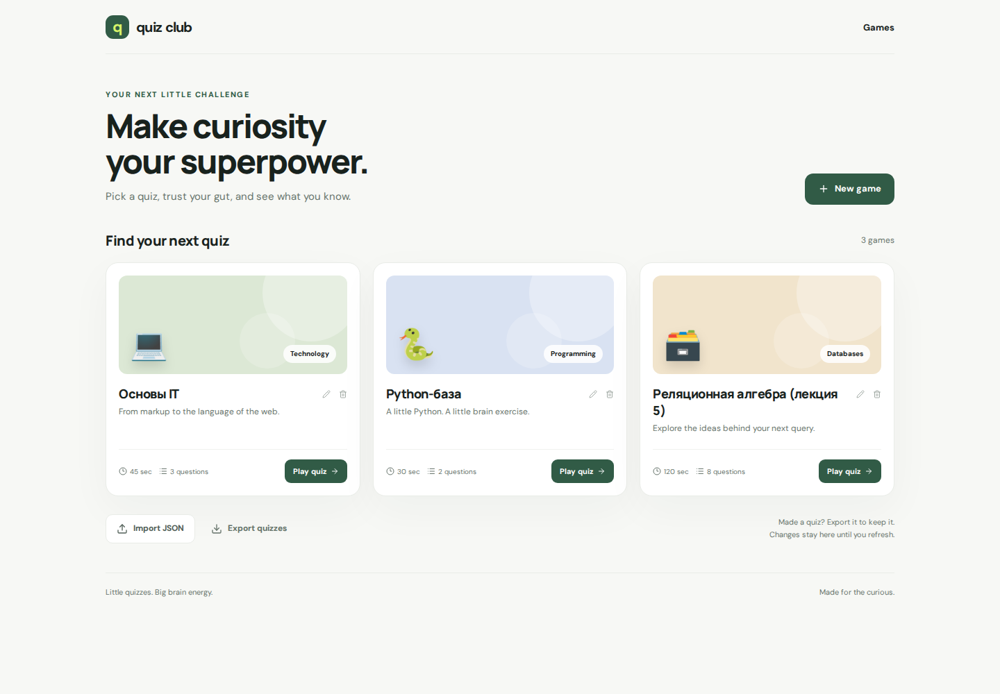

Список игр

Актуализированный кликабельный экспорт исходного AI-прототипа. Экраны сняты с React-интерфейса на shadcn/ui. Ссылки ниже показывают последовательность сценария и альтернативные состояния; работающая логика находится в project/.
